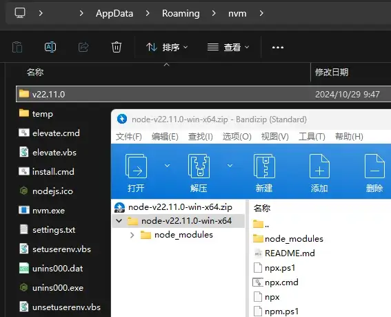
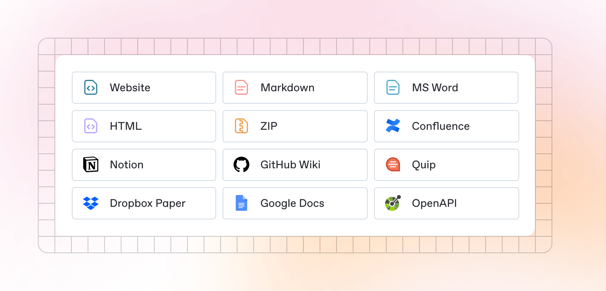
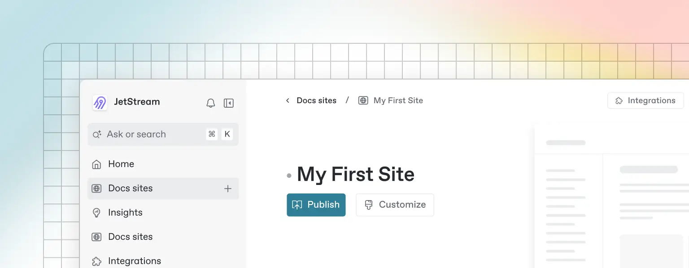

资源
安装
有两种方式可以配置 GitBook：
本地版：
网页版：
- GitBook 入门指南 - 知乎（国内进不去，可恶！）
规则
开始
本地版
安装 nvm
这个 GitBook 的本地版年久失修很久了，用新的 Node.js 会出现兼容问题……得整一个 nvm。
把原有的 Node.js 卸了，装 nvm。
命令行查看 nvm 版本：
1 | |
1 | |
安装 npm
找到 nvm 安装的路径，修改 settings.txt 下的内容以配置镜像：
1 | |
这边还是下载失败，只好像安装 pytorch 一样离线安装了……
从 Node.js 中文网 — 下载 Node.js® 想要版本的 预构建二进制文件，解压出来并改名：

以此法装一个最新的 Node.js（v22.11.0） 和支持 GitBook 的 Node.js（v10.24.1）。命令行查看是否安装成功：
1 | |
1 | |
激活！
1 | |
查看下载源：
1 | |
1 | |
切换镜像：
1 | |
安装 GitBook
安装 GitBook CLI：
1 | |
查看安装情况：
1 | |
1 | |
在项目文件夹下初始化 GitBook：
1 | |
1 | |
查看帮助：
1 | |
| 命令 | 描述 | 选项/参数 |
|---|---|---|
build [book] [output] |
构建一本书 | –log: 日志级别（默认是 info，可选：debug, info, warn, error, disabled） --format: 构建格式（默认是 website，可选：website, json, ebook） --[no-]timing: 打印调试信息（默认是 false） |
serve [book] [output] |
将书籍作为网站提供测试服务 | –port: 服务器监听的端口（默认是 4000） --lrport: 直播重载服务器的端口（默认是 35729） --[no-]watch: 启用文件监视和实时重载（默认是 true） --[no-]live: 启用实时重载（默认是 true） --[no-]open: 启用在浏览器中打开书籍（默认是 false） --browser: 指定用于打开书籍的浏览器（默认是空） --log: 日志级别（默认是 info，可选：debug, info, warn, error, disabled） --format: 构建格式（默认是 website，可选：website, json, ebook） |
install [book] |
安装所有插件的依赖 | –log: 日志级别（默认是 info，可选：debug, info, warn, error, disabled） |
parse [book] |
解析并打印书籍的调试信息 | –log: 日志级别（默认是 info，可选：debug, info, warn, error, disabled） |
init [book] |
设置并创建章节文件 | –log: 日志级别（默认是 info，可选：debug, info, warn, error, disabled） |
pdf [book] [output] |
将书籍构建成电子书文件 | –log: 日志级别（默认是 info，可选：debug, info, warn, error, disabled） |
epub [book] [output] |
将书籍构建成电子书文件 | –log: 日志级别（默认是 info，可选：debug, info, warn, error, disabled） |
mobi [book] [output] |
将书籍构建成电子书文件 | –log: 日志级别（默认是 info，可选：debug, info, warn, error, disabled） |
编译：
1 | |
得到网页文件：
演示
网页版
按 GitBook 步骤走就行。得到一个域：Welcome | Zi-Zi’s Jounery
使用 Edit in change requset 编辑，使用 Merge 编译。
说明（网页版）
Welcome
Welcome to the GitBook Starter Template! Here you’ll get an overview of all the amazing features GitBook offers to help you build beautiful, interactive documentation.
欢迎使用 GitBook 入门模板！在这里，您将获得 GitBook 提供的所有惊人功能的概述，以帮助您构建美观、交互式的文档。
You’ll see some of the best parts of GitBook in action — and find help on how you can turn this template into your own.
您将看到 GitBook 的一些最佳部分正在发挥作用，并找到如何将此模板转化为自己的帮助。
Getting Started
Quickstart
Beautiful documentation starts with the content you create — and GitBook makes it easy to get started with any pre-existing content.
漂亮的文档从你创建的内容开始——GitBook 让你很容易开始使用任何预先存在的内容。
Import
GitBook supports importing content from many popular writing tools and formats. If your content already exists, you can upload a file or group of files to be imported.
GitBook 支持从许多流行的写作工具和格式导入内容。如果您的内容已经存在，您可以上传一个或一组要导入的文件。

Sync a repository
GitBook also allows you to set up a bi-directional sync with an existing repository on GitHub or GitLab. Setting up Git Sync allows you and your team to write content in GitBook or in code, and never have to worry about your content becoming out of sync.
GitBook 还允许您与 GitHub 或 GitLab 上的现有存储库设置双向同步。设置Git Sync 允许您和您的团队在 GitBook 或代码中编写内容，而无需担心您的内容会不同步。
Publish your docs
Once you’ve finished writing, editing, or importing your content, you can publish your work to the web as a docs site. Once published, your site will be accessible online only to your selected audience.
一旦你完成了写作、编辑或导入内容，你就可以将你的作品作为文档网站发布到网上。一旦发布，您的网站将仅对选定的受众在线访问。
You can publish your site and find related settings from your docs site’s homepage.
您可以在文档网站的主页上发布您的网站并查找相关设置。

Basics
Editor
GitBook has a powerful block-based editor that allows you to seamlessly create, update, and enhance your content.
GitBook 有一个强大的基于块的编辑器，可以让你无缝地创建、更新和增强你的内容。

Writing content
GitBook offers a range of block types for you to add to your content inline — from simple text and tables, to code blocks and more. These elements will make your pages more useful to readers, and offer extra information and context.
GitBook 提供了一系列块类型供您内联添加到内容中——从简单的文本和表格到代码块等等。这些元素将使您的页面对读者更有用，并提供额外的信息和背景。
Either start typing below, or press / to see a list of the blocks you can insert into your page.
请在下面开始键入，或按 / 查看可以插入页面的块列表。
Markdown
GitBook supports many different types of content, and is backed by Markdown — meaning you can copy and paste any existing Markdown files directly into the editor!
GitBook 支持许多不同类型的内容，并由 Markdown 支持——这意味着您可以将任何现有的 Markdown 文件直接复制粘贴到编辑器中！
Feel free to test it out and copy the Markdown below by hovering over the code block in the upper right, and pasting into a new line underneath.
您可以随意测试它，并将鼠标悬停在右上角的代码块上，然后粘贴到下面的新行中，复制下面的 Markdown。
1 | |
If you have multiple files, GitBook makes it easy to import full repositories too — allowing you to keep your GitBook content in sync.
如果你有多个文件，GitBook 也可以轻松导入完整的存储库，让你的 GitBook 内容保持同步。
Images & media
GitBook allows you to add images and media easily to your docs. Simply drag a file into the editor, or use the file manager in the upper right corner to upload multiple images at once.
GitBook 允许您轻松地将图像和媒体添加到文档中。只需将文件拖动到编辑器中，或使用右上角的文件管理器一次上传多张图像。

You can also add images simply by copying and pasting them directly into the editor — and GitBook will automatically add it to your file manager.
您还可以通过将图像直接复制并粘贴到编辑器中来添加图像，GitBook 会自动将其添加到您的文件管理器中。
Interactive blocks
In addition to the default Markdown you can write, GitBook has a number of out-of-the-box interactive blocks you can use. You can find interactive blocks by pressing / from within the editor.
除了你可以编写的默认 Markdown 之外，GitBook 还有许多你可以使用的开箱即用的交互式块。您可以通过在编辑器中按 / 找到交互式块。

Tabs
Each tab is like a mini page — it can contain multiple other blocks, of any type. So you can add code blocks, images, integration blocks and more to individual tabs in the same tab block.
每个选项卡都像一个迷你页面——它可以包含多个其他任何类型的块。因此，您可以将代码块、图像、集成块等添加到同一选项卡块中的各个选项卡中。
Add images, embedded content, code blocks, and more.
添加图像、嵌入式内容、代码块等。
1 | |
Expandable sections
Click me to expand
Expandable blocks are helpful in condensing what could otherwise be a lengthy paragraph. They are also great in step-by-step guides and FAQs.
可扩展块有助于压缩原本可能很长的段落。它们在分步指南和常见问题解答方面也很出色。
Embedded content
GitBook supports thousands of embedded websites out-of-the-box, simply by pasting their links. Feel free to check out which ones are supported natively.
GitBook 支持成千上万的嵌入式网站，只需粘贴链接即可。请随时查看哪些是本机支持的。
OpenAPI
You can sync GitBook pages with an OpenAPI or Swagger file or a URL to include auto-generated API methods in your documentation.
您可以将 GitBook 页面与 OpenAPI 或 Swagger 文件或 URL 同步，以便在文档中包含自动生成的 API 方法。
OpenAPI block
GitBook’s OpenAPI block is powered by Scalar, so you can test your APIs directly from your docs.
GitBook 的 OpenAPI 块由 Scalar 提供支持，因此您可以直接从文档中测试您的API。
Integrations
GitBook integrations allow you to connect your GitBook spaces to some of your favorite platforms and services. You can install integrations into your GitBook page from the Integrations menu in the top left.
GitBook 集成允许您将 GitBook 空间连接到您最喜欢的一些平台和服务。您可以从左上角的集成菜单将集成安装到 GitBook 页面中。